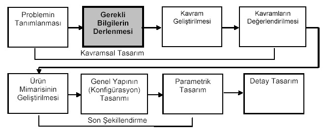

|
Yard.
Doç. Dr. Haydar Livatyalý
Ýstanbul Teknik Üniversitesi Makine Müh. Böl.
E-Posta: livatyali@itu.edu.tr
* (MAK/ÝML 111 ders notu)
Bilgi
Derlemenin Tasarýmdaki Yeri
Bilgi
derleme, makine tasarýmýnda problemin tanýmlanmasýnýn ardýndan
gelen ilk aþamalardan biridir (Þekil 1). Bu aþamada sistematik
yaklaþým hem aranan bilgi ve verilere süratle eriþimi saðlar
hem de temin edilen kaynaklar içinde gerekli ve faydalý olanýn
kýsa sürede ayýklanmasýný saðlar.

Þekil 1: Bilgi derlemenin tasarým süreci içindeki yeri
Telif Haklarý ve Kopyalama
Telif
haklarý konusu hukukî açýdan ülkeler arasýnda farklýlýklar
gösterse de, giderek bütün dünyada geçerli yasa ve kurallarýn
hakim olmaya baþladýðý gözlenmektedir. Basýlý ve yayýnlanmýþ
bütün dokümanlardan fotokopi vb. yollarla kopya alýnmasý problemli
ve belirsizlikler içeren bir konudur. Ancak eðitim ve bilimsel
araþtýrma maksadýyla bireysel olarak yapýlan ve kâr amacý
taþýmayan kýsmî kopyalama (fotokopi vb.) yasal kabul edilmektedir.
Bilgi Kaynaklarýna Genel Bir Bakýþ
Tasarýmla
uðraþan profesyonel bir mühendis tarafýndan takip edilmesi
ve okunmasý gereken süreli yayýnlar üç kategoriye ayrýlýr:
- Genel
bilimsel, teknik ve ekonomik (iþ dünyasý) haberleri... Makine
Mühendisleri Odasýnýn çýkardýðý aylýk "Mühendis ve
Makina" dergisi bu gruptadýr.
- Çalýþýlan
iþ kolundaki veya ilgi alanlarýndaki peryodik ticarî ve
teknik dergiler... Ýmalat üzerine "Makine Teknik",
"Makine Metal Malzeme Dünyasý", "Kalýpçýlýk
Dünyasý" veya tesisat üzerine "Tesisat Mühendisliði"
gibi dergiler bu grupta düþünülebilir.
- Ýlgi
alanýnýzdaki araþtýrmaya yönelik dergi, mecmua, jurnal vb.
yayýnlar... TÜBÝTAK tarafýndan yayýnlanan "Mühendislik
ve Doða Bilimleri" dergisi, MATÝM Derneði tarafýndan
yayýnlanan "Makine Tasarým ve Ýmalat Degisi" gibi
ulusal dergiler yanýnda çoðunluðu Ýngilizce olarak yayýnlanan
binlerce ihtisas ve araþtýrma jurnalleri bu gruptadýr.
Özellikle
üçüncü kategoride yer alan yayýnlarýn içerdiði makalelerin
izlenebilmesi için peryodik yayýn özeti hizmetlerinden yararlanmak
(abstract services) gerekmektedir. Bunlar arasýnda Engineering
Index, Metals Abstracts ve Institute for Scientific Information
tarafýndan haftalýk olarak yayýnlanan "Current Contents:
Engineering and Technology" en ünlüleridir. Ayrýca Elsevier
Science gibi bazý büyük dergi ve jurnal yayýncýlarý, internet
üzerinden ücretsiz olarak abone olanlara, aboneler tarafýndan
seçilen dergilerde çýkan makalelerin içindekiler listeleriniyayýn
çýktýktan sonra kýsa bir süre içinde e-posta aracýlýðýyla
duyurmaktadýrlar.
Mühendislik
Tasarýmýnda Bilgi Kaynaklarý aþaðýdaki listedeki gibi özetlenebilir:
| 1.
Kamu Kaynaklarý |
Merkezi
hükümete baðlý daire, kurum ve birimler (Baþbakanlýk,
DPT, TÜBÝTAK, Enerji, Sanayi ve Ticaret Bakanlýklarý)
Mahallî idareler (Belediye, özel idare vb. Kurumlarýn
yayýnlarý ve arþivleri)
Kütüphaneler (Halk, üniversite ve ihtisas)
Üniversiteler, enstitüler ve müzeler
Yabancý hükümet temsilcilikleri (Elçilik, konsolosluk,
ticarî ateþelik bürolarý)
Internet (Bilgi çoðunlukla ücretsizdir, bazý ücretli abonelik
servisleri de vardýr.) |
| 2.
Özel Kaynaklar |
|
|
A.
Kâr Amacý Gütmeyen Kuruluþlar
|
Meslekî
Oda ve Dernekler (MMO)
Ticaret ve Sanayi Odalarý (OBB, ÝTO, ÝSO), Sendikalar
(MESS, TÜRK-ÝÞ, TÝSK)
Dernek, Cemiyet ve Vakýflar |
|
B.
Kâr Amaçlý Kuruluþlar
|
Üretici
ve Satýcýlar (imalatçýlar, distribütörler, finansörler):
Kataloglar, numuneler, test ve deney sonuçlarý, maliyet
verileri)
Ýmalatçýlarla kurulan kiþisel iliþkiler
Danýþmanlýk bürolarý ve kuruluþlarý |
| 3.
Bireyler |
Doðrudan
görüþme ve yazýþmalar
Yakýn arkadaþlar, iþ arkadaþlarý, arkadaþlarýn arkadaþlarý
Öðretim Üyeleri |
Kütüphaneler
Klasik
anlamda kütüphane deðiþik zaman ve yerlerde ve çeþitli dillerde
yayýnlanmýþ kitap ve her türlü süreli yayýnýn toplandýðý ve
abonelerin kullanýmýna sunulduðu yerlerdir. Modern kütüphane
ise kitap ve süreli yayýnlara ek olarak, kataloglar, broþürler,
patent arþivleri, standart metinleri vb. her türlü sýnaî ve
ticari dokümanýn yanýnda ses, resim, görüntü içeren kompakt
disk, kaset, film, mikrofiþ ve internet eriþimli bilgisayarlar
gibi çok çeþitli iletiþim araçlarýný da içinde barýndýrmaktadýr
(Tablo 3).
Tarama
verimi genellikle iki parametre ile açýklanýr: Hassaslýk ve
Eriþim. Hassaslýk araþtýrýlan konuyla ilgili kaynaklarýn temin
edilen kaynaklara oranýdýr. Eriþim oraný ise, temin edilen
ilgil kaynaklarýn, literatürdeki bütün ilgili kaynaklara oranýdýr.
Her iki oranýn yükseltilmesi zaman içinde kazanýlan beceri
ve deneyim ile ilgilidir:
| |
Elde
edilen ilgili kaynak sayýsý
|
|
Hassaslýk
=
|
|
| |
Elde
edilen bütün kaynak sayýsý
|
|
| |
Elde
edilen ilgili kaynak sayýsý
|
|
Eriþim
=
|
|
| |
Var
olan bütün ilgili kaynak sayýsý
|
|
ÝTÜ'de
Bilgi Eriþimi imkanlarý son yýllarda çok geliþmiþ ve Dünya
standartlarýnda bir konuma eriþmiþtir. Kullanýmý giderek yaygýnlaþan
ve kolaylaþan internet aðý sayesinde pek çok uluslararasý
süreli yayýna ulaþmak çok kolaylaþmýþ ve hýzlanmýþtýr. ITÜ
Kütüphanesinin internetteki ana sayfasý Tablo 1'de verilmiþtir.
Bu site sayesinde yazar, baþlýk veya konusuna göre mevcut
kitaplarý belirlemek çok kolaydýr. Bu durumda özellikle konu
taramasý yaparken esas olan doðru anahtar kelimelerin tespitidir.
Yukarýda Þekil 1'de gösterilen akýþ þemasýna göre öncelikle
sözlük, ansiklopedi ve ders kitabý gibi kaynaklardan Türkçe,
Ýngilizce ve bilinen diðer yabancý dillerde doðru anahtar
kavram ve terimler belirlenmeli ve tarama yapýlmalýdýr.
Tablo
1: Kütüphanelerdeki Bilgi Kaynaklarýnýn Hiyerarþisi
|
Teknik
sözlükler
Ansiklopediler
El kitaplarý
Ders Kitaplarý veya belli konular üzerine kaynak kitaplar
Bibliografyalar ve Yayýncý kataloglarý
Indeks ve Yayýn Özeti Hizmetleri
Teknik ve meslekî dergi ve jurnaller
Çeviriler
Teknik raporlar (Konu taramalarý ve Proje Raporlarý)
Patentler
Kataloglar ve Ýmalatçý Broþürleri
|
|